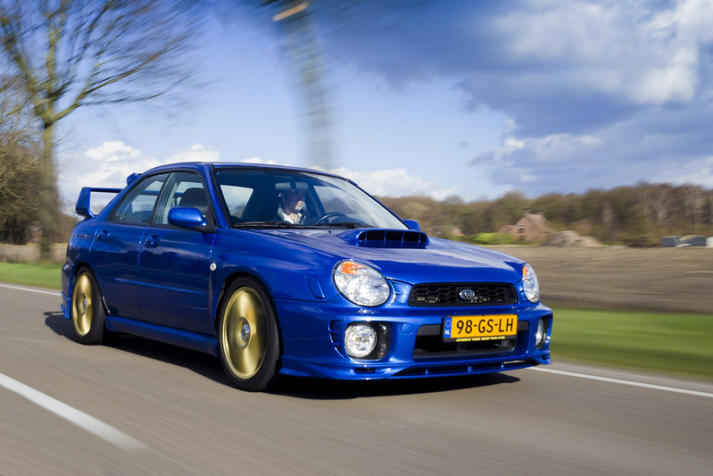

The Subaru Impreza is a compact car that has been manufactured since 1992 by Subaru, introduced as a replacement for the Leone, with the predecessor's EA series engines replaced by the new EJ series.
Now in its fifth generation, Subaru has offered four-door sedan and five-door body variants since 1992; the firm also offered a coupe from 1995 until 2001, and a 5-door wagon from the Impreza's introduction in the form of a hatchback. Mainstream versions have received "boxer" flat-four engines ranging from 1.5- to 2.5-liters, with the performance-oriented Impreza WRX and WRX STI models uprated with the addition of turbochargers. Since the third generation series, some markets have adopted the abbreviated Subaru WRX name for these high-performance variants. The first three generations of Impreza in North America were also available with an off-road appearance package called the Outback Sport. For the fourth generation, this appearance package was renamed the XV (Crosstrek in North America), and, unlike the Outback Sport (which was exclusive to the North American market), is sold internationally.
The Impreza (also Impreza WRX and Impreza WRX STI) is a major rival to the Mitsubishi Lancer (and Mitsubishi Lancer Evolution).
Subaru has offered both front- and all-wheel drive layouts for the Impreza. Since the late-1990s, some markets have restricted sales to the all-wheel drive model—therefore granting the Impreza a unique selling proposition in the global compact class characterized by front-wheel drive. However, Japanese models remain available in either configuration.
The Impreza chassis has been more successful in rallying than Subaru's previous contenders. Prior to the introduction of the Impreza into World Rally Championship racing in 1993, the Subaru World Rally Team had fielded its larger mid-size Legacy. However, with the rest of the rally competition increasingly shifting towards smaller and lighter chassis, Subaru introduced the smaller Impreza, immediately achieving a podium on its debut on the 1993 1000 Lakes Rally. To jumpstart its early rally efforts, and to develop the Impreza into a competitive rally car, Subaru teamed up with preparatory firm and British motorsports company Prodrive, in 1989.
Personally, the WRX Impreza is one of the coolest cars out there. It is a highly successful rally car, and in general is a quick and capable car that could do practically anything. The STi model in particular is what I believe to the ultimate version of this car as the iconic blue of that comes out the factory is something I could recognize immediately.
Growing up as a kid, my family owned a silver 05 WRX. It was easily one of the coolest cars I have ever been. I had a lot of memories in that car as the funnest memories I had was cruising with my dad and hearing the turbo every time he gunned it down the highway. Sadly, my parents had to sell the car back in 2012 because we needed money. We are financially secure now, but back then, it hurt having to see the car go after the memories I had in it.
The newest models of Subaru WRX is also something I wouldn't mind owning too. The newer models I believe still hold true to the earlier models. With it still retaining it's AWD capabilities and still proving to be an awesome and reliable car. While many people may not like the Subaru's new appearence, I still like it as well as all Subarus.
My lifelong goal after completing college is to own an 05 WRX like the one my family had when I was a kid. I always loved Subaru's in general but the WRX in particular is a car I will never forget. I hope one day I can own one, as I believe it is one of the coolest and most memorable cars out there. In my opinion, a Subaru is a car that can do basically anything.